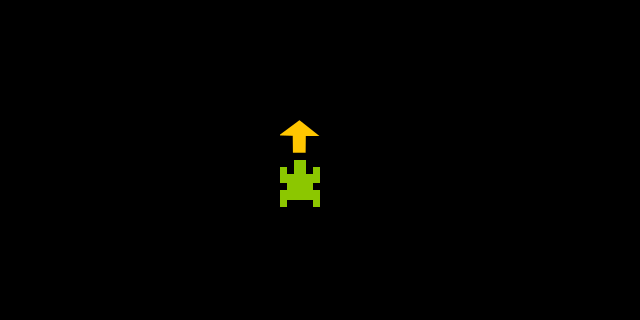

Pixel Turtle
Position and heading

If you turn on your Pixel Kit and only see a green and a yellow pixel it’s because you probably have the Pixel Turtle library installed and running on your Pixel Kit already! If that is not the case, check How to Install and Use Pixel Kit MicroPython Libraries.
If you did see the two pixels then imagine the green pixel as if it was a turtle seen from above and the yellow pixel is where the turtle is heading for.
Left and right
You can turn the turtle around by using the commands left() and right(). If you just call left() or right() you will turn your turtle only by one “step”. If you call left(2) it’s the same as calling left() twice.
Try this example and see what happens:
from PixelTurtle import *
left()
left(1)
right(3)
Forward and backward
If you call forward() or backward() the turtle will step forward or backwards in the current heading direction. If you call forward(2) it will give 2 steps forward, which is the same as calling forward()
twice.
Try this example and see what happens:
from PixelTurtle import *
left()
forward(2)
left(2)
forward(2)
left(3)
forward(4)
Setting color

You can change your turtle to be another color by calling setColor(blue) for example. There are 8 colors ready for you to choose: red, green, blue, yellow, cyan, purple, black, white.
If none of those is your favourite color, you can create your own. For example if you want to create a dark blue color you would type something like dark_blue = [0, 0, 5] and then set your color setColor(dark_blue).
Try this example and see what happens:
from PixelTurtle import *
left(2)
setColor(red)
forward()
setColor(yellow)
forward()
setColor(green)
forward()
setColor(cyan)
forward()
setColor(blue)
forward()
setColor(purple)
forward()
left(2)
setColor(white)
Pen up and pen down

You might have noticed that every time you move around with your turtle it leaves a trace behind. This is because the “pen is down”, which means wherever you go, you will be dragging the pen on the “floor”. If you want to move around without drawing you can call penUp() which will lift the pen until you call penDown() again.
Try this example and see what happens:
from PixelTurtle import *
forward(3)
left(2)
penUp()
forward(2)
penDown()
left(2)
forward(3)
right(2)
penUp()
forward(2)
penDown()
right(2)
forward(3)
Clearing screen
You can clear all the drawings you have made on screen by calling clear().
Try this example and see what happens:
from PixelTurtle import *
forward(4)
backward(4)
clear()
Move
Teleport your pixel turtle x steps on the horizontal and y steps on the vertical based on your current pixel turtle positon. The steps can be negative numbers and numbers grow to the right and down.
Try this example and see what happens:
from PixelTurtle import *
move(2, 0)
move(0, 2)
move(-2, 0)
move(0, -2)
Move To

Teleport your pixel turtle to the column x and line y of your Pixel Kit. The pixel on the top left corner is the row 0 and column 0. The numbers grow to the right and down (the pixel on bottom right is row 7 and column 15).
Try this example and see what happens:
from PixelTurtle import *
moveTo(2, 0)
moveTo(0, 2)
moveTo(5, 0)
moveTo(5, 2)
Show and Hide Pixel
Makes the pixel invisible. You can still call all the commands normally and it the pixel turtle will behave just as if it was visible, including leaving a trace on the color you set.
Try this example and see what happens:
from PixelTurtle import *
hidePixel()
setColor(blue)
left(2)
forward(4)
showPixel()
Show and Hide Heading

Makes the heading invisible. You can still call all the commands normally and it the pixel turtle will behave just as if it was visible, including leaving a trace on the color you set.
Try this example and see what happens:
from PixelTurtle import *
hideHeading()
left(1)
forward(3)
right(3)
showHeading()
Setting Heading Color

Imagine you want to make a drawing where the background is the same yellow as the heading or another color that makes really hard to see it. With setHeadingColor() you can set the heading color to another one so it makes a good contrast with your background.
You can use the same colors as in setColor(): red, green, blue, yellow, cyan, purple, black, white. Or you can create your own color like dark_blue = [0, 0, 5] and then set your heading color setHeading(dark_blue).
Try this example and see what happens:
from PixelTurtle import *
import PixelKit as kit
kit.setBackground(yellow)
kit.render()
setHeadingColor(green)
left(1)
forward(2)
right(3)
Get X and Y
If you want to know what is the current x or y coordinate of your pixel turtle you can call getX() and getY() on your console and you will get a number printed. If you want to use in your code you can assign the current value “returned” by getX() or getY().
Try this example and see what happens:
from PixelTurtle import *
penUp()
clear()
while True:
current_y = getY()
if current_y == 7 or current_y == 0:
left(4)
forward()
Aliases
If you get tired of writing the same thing over and over and over you might use the aliases for each command. Aliases are other words for the same command, in this case the aliases are the first letters of the command:
sc()is forsetColor()shc()is forsetHeadingColor()mt()is formoveTo()m()is formove()sp()is forshowPixel()hp()is forhidePixel()sh()is forshowHeading()hh()is forhideHeading()pd()is forpenDown()pu()is forpenUp()f()is forforward()b()is forbackward()l()is forleft()r()is forright()c()is forclear()